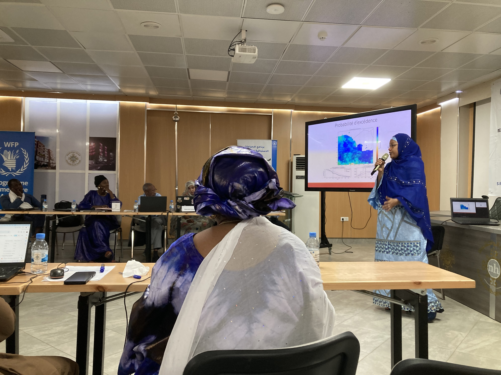

Action Design Answers
There are no right answers to the questions from the previous forms, there are only challenging tradeoffs that must be made using math and the professional responsabilty and expertise of the action designers and the elected or appointed official who holds responsiblity for action.
Forecast Trigger Design and Action Design MUST be done together!

Anticipatory action requires a simultaneous solution of multiple equations. The math is simply incorrect if disaster actors, funding constraints, and climate scientists are not all involved in both parts.
Action Design Depends On
-
budgets
-
forecast accuracy
-
timelines
-
costs
-
consequences of action and inaction
-
designing fallback options to address errors
Forecast trigger design depends on
-
how often actions need to be taken (disaster frequency)
-
budgets
-
forecast accuracy
-
consequences of action
-
consequences of inaction
-
what component of the action the specific trigger is activating